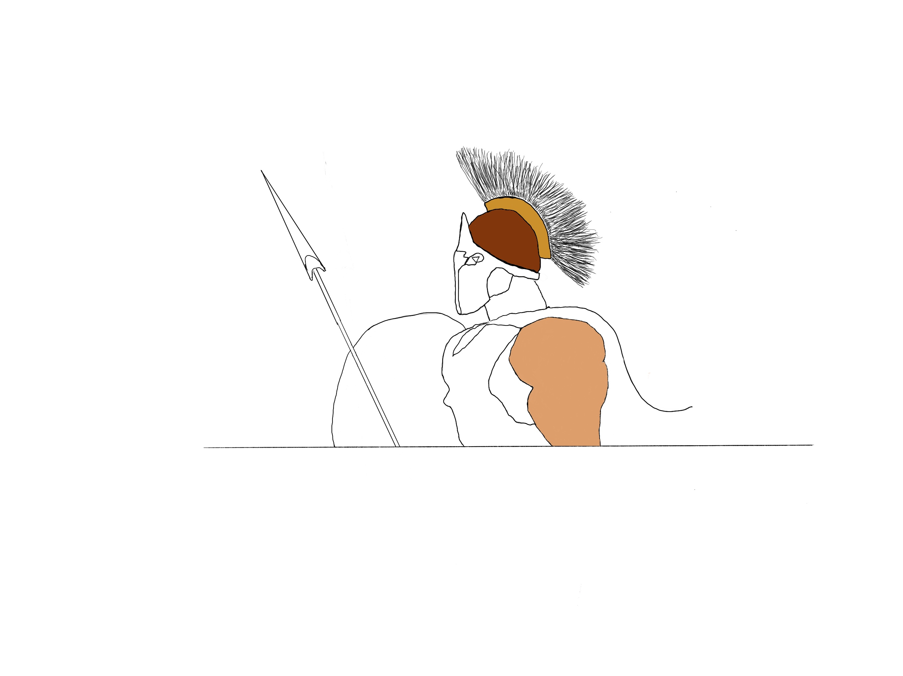
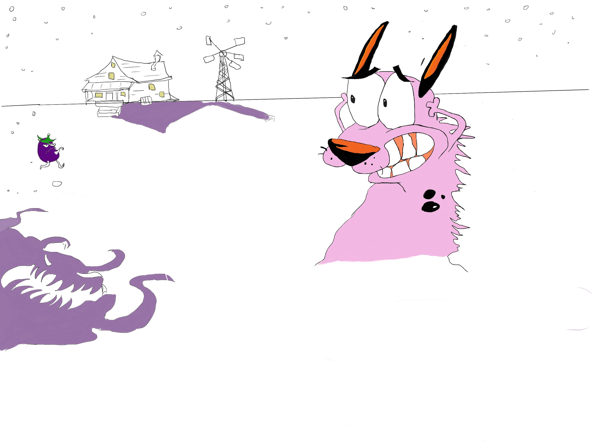

Projects
Project Sparta
 One of my first drawings on procreate as a learning process. It is still in progress and with
more time, I will have perfected it. I'll add more layers on top to try make it look realistic.
Project Courage
 Took a sample picture online and tried to remake a drawing of it
from one of my favorite cartoons from childhood, just to improve my drawing skills.
Pending
Still haven't made any programming projects.